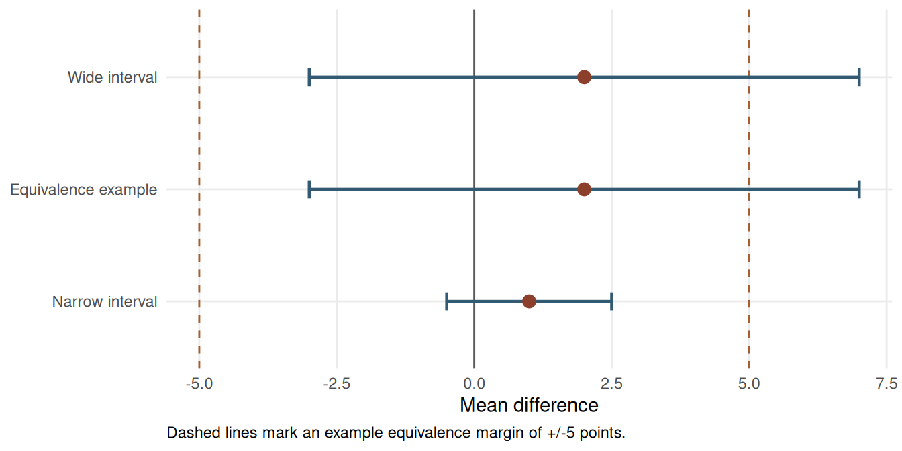

Chapter 16: Interpreting Non-Significant Results
Learning Objectives
By the end of this chapter, you will be able to distinguish “no evidence of effect” from “evidence of no meaningful effect,” interpret non-significant results using confidence intervals and power, recognise when a study is inconclusive, and use equivalence or non-inferiority logic when the research question is about similarity rather than difference.
What a Non-Significant Result Means
A non-significant result means that the observed data were not sufficiently inconsistent with the null hypothesis to reject it at the chosen alpha level. It does not prove the null hypothesis, and it does not show that an intervention is ineffective. With small samples, non-significant results are common because power is limited; a study with 30% power will fail to reject the null 70% of the time even when the alternative hypothesis is true.
The phrase “absence of evidence is not evidence of absence” is useful here, but it should be qualified by power. If a design has only 30% power to detect a meaningful effect, a non-significant result provides little information either way. If a study reports p = 0.15, the safest conclusion is that the data do not provide strong evidence against the null. Whether the result also rules out practically meaningful effects depends on the confidence interval.
Reading the Confidence Interval
The confidence interval is the main tool for interpreting a non-significant result. A narrow interval that excludes effects large enough to matter can support a claim that any remaining effect is likely trivial. A wide interval that includes trivial and important values means the study is inconclusive.
Table 16.1
Confidence-interval interpretations for non-significant results
| Scenario | n per group | Mean difference | 95% CI | p-value | Interpretation |
|---|---|---|---|---|---|
| Narrow non-significant interval | 100 | 1 | -0.5 to 2.5 | 0.120 | If differences below 3 points are trivial, this interval rules out a meaningful benefit. |
| Wide non-significant interval | 12 | 2 | -3.0 to 7.0 | 0.350 | The interval includes harmful, trivial, and beneficial values; the study is inconclusive. |
| Equivalence not established | 12 | 2 | -3.0 to 7.0 | 0.450 | The interval extends outside the +/-5 equivalence margin, so equivalence is not demonstrated. |
Note. All examples use a mean-difference scale where positive values favour the intervention.
The first interval rules out effects above a practical threshold of 3 points, so a cautious “no meaningful difference” interpretation may be reasonable if that threshold was defined in advance. The second interval is wider and includes values that could change the substantive conclusion. The third example shows why a small point estimate alone is not enough to claim equivalence.
Power and Minimum Detectable Effects
Small samples can fail to detect effects that would matter in practice. A useful post hoc descriptive check is the minimum detectable effect: the effect size the planned sample would have had 80% power to detect under conventional assumptions. The purpose is to communicate what the design was capable of detecting, which is a different question from salvaging an observed p-value.
Table 16.2
Minimum detectable standardised effects under conventional two-sample testing
| n per group | Rounded MDE | Interpretation |
|---|---|---|
| 12 | 1.20 | Only very large effects are detectable with 80% power. |
| 20 | 0.91 | Large effects remain the main detectable target. |
| 50 | 0.57 | Moderate-to-large effects become detectable. |
| 100 | 0.40 | Moderate effects are detectable with conventional power. |
Note. Values use two-sided alpha = 0.05, 80% power, equal group sizes, and sd = 1. They should be treated as planning summaries rather than guarantees. The 100-per-group row is shown only as a comparison point and exceeds the book's primary small-sample scope.
With 12 participants per group, the design is well powered only for a standardised effect of about d = 1.20. If the smallest meaningful effect is d = 0.40, a non-significant result from that design cannot rule it out. The correct conclusion is that the study was too imprecise to decide the question.
This design-based MDE check is different from post-hoc power calculated from the observed effect size. MDE uses the planned design inputs: sample size, alpha, and a target power level. Post-hoc power based on the observed effect is circular because it is mostly a re-expression of the p-value; it does not add information after the study has been analysed and is not recommended (Hoenig and Heisey 2001).
Equivalence and Non-Inferiority
If the scientific question is whether two treatments are similar enough, ordinary null-hypothesis testing is the wrong framework. Equivalence testing starts by defining a margin: the largest difference that would still be practically negligible. The two one-sided tests procedure then asks whether the confidence interval lies entirely inside that margin (Lakens, Scheel, and Isager 2018). Non-inferiority testing uses a one-sided version when the goal is to show that a new treatment is not unacceptably worse than a standard option.
In the anxiety-score example below, the observed difference is 2 points on a 0-100 scale. The prespecified equivalence margin is +/-5 points. The ordinary p-value is non-significant, but the 95% CI extends from -3 to 7, so values above the +5 margin remain plausible.
The TOST statistics are derived from the confidence interval and margin. With df = 22, the standard error implied by the 95% CI is SE = (7 - (-3)) / (2 * qt(0.975, 22)) = 2.41. The lower-margin statistic is (2 - (-5)) / SE = 2.90; the upper-margin statistic is (2 - 5) / SE = -1.24. The same calculation can be reproduced with a dedicated function such as TOSTER::TOSTtwo.raw() when the group means, standard deviations and sample sizes are available.
# The values below reproduce the worked example:
# group mean difference = 2, n = 12 per group, pooled SD chosen so SE = 2.41.
library(TOSTER)
TOSTtwo.raw(
m1 = 52,
m2 = 50,
sd1 = 5.91,
sd2 = 5.91,
n1 = 12,
n2 = 12,
low_eqbound = -5,
high_eqbound = 5,
alpha = 0.05,
var.equal = TRUE
)When TOSTER is not available, the manual calculation in Table 16.3 is sufficient: compute the standard error, test the lower margin with the upper-tail probability, test the upper margin with the lower-tail probability, and conclude equivalence only if both one-sided p-values are below alpha.
Table 16.3
Two one-sided tests for the equivalence example
| Test | Null | Statistic | p-value | Interpretation |
|---|---|---|---|---|
| Lower-margin test | Difference <= -5 points | t = 2.90 | 0.004 | The data reject differences worse than -5 points. |
| Upper-margin test | Difference >= +5 points | t = -1.24 | 0.113 | The data do not reject differences at or above +5 points. |
| Overall TOST decision | Both one-sided tests must reject | -- | max p = 0.113 | Equivalence is not established because the upper-margin test is not significant. |
Note. TOST evaluates H0: Delta <= -delta and H0: Delta >= +delta, where delta is the equivalence margin. Equivalence is concluded only if both one-sided tests reject at alpha, which is equivalent to the 100(1 - 2 alpha)% CI lying inside (-delta, +delta).
The lower-margin test rules out differences worse than -5 points, but the upper-margin test does not rule out differences of +5 points or more. The result should therefore be reported as non-significant and not equivalent. A larger or more precise study would be needed to support an equivalence claim.
Reporting Non-Significant Results
Responsible reporting avoids definitive language unless the design and interval justify it. The report should state the estimate, confidence interval, p-value, practical threshold, and design limitation. If the result is inconclusive, say so directly.
NoteLimitations Paragraph Template
Use a limitations paragraph to explain what the study could and could not rule out:
“This study estimated [effect/comparison] with [sample size/design]. The point estimate was [estimate] and the confidence interval ranged from [lower] to [upper]. Because the interval [does/does not] include the prespecified practically important threshold of [threshold], the result should be interpreted as [inconclusive / compatible with no meaningful effect / insufficient for equivalence]. With this sample size, the design had 80% power only for effects of approximately [MDE] or larger, so smaller effects remain unresolved. Future work should [replicate with larger n / improve measurement precision / use a paired design / pre-specify equivalence margins].”
Table 16.4
Safer language for reporting non-significant results
| Weak wording | Stronger wording |
|---|---|
| There was no effect. | No statistically significant difference was observed, and the 95% CI should be used to judge plausible effects. |
| The treatments were equivalent. | The observed difference was small, but the confidence interval did not stay within the prespecified equivalence margin. |
| The study proved the null hypothesis. | The data did not provide strong evidence against the null hypothesis; they do not prove that the effect is zero. |
| The result was non-significant, so smaller effects do not matter. | With n = 12 per group, the study had 80% power to detect d = 1.20; smaller effects could not be ruled out. |
Note. Claims of equivalence or no meaningful effect require a prespecified margin and a sufficiently precise interval.
Bayes factors can also quantify relative evidence for a null model versus an alternative model, but they are sensitive to the prior distribution for the effect size under the alternative (Morey and Rouder 2011; Dienes 2014; Wagenmakers et al. 2018). Report the prior distribution and, when feasible, conduct a prior-sensitivity analysis showing how the Bayes factor changes across plausible specifications. In introductory small-sample reporting, a confidence-interval and equivalence-margin approach is usually more transparent for readers.
Key Takeaways
Non-significant results are not automatically negative findings. A narrow interval can rule out effects large enough to matter, whereas a wide interval leaves the study inconclusive. Equivalence and non-inferiority claims require a prespecified practical margin and evidence that the interval stays within that margin. In small-sample research, the strongest reporting pairs the p-value with the estimate, confidence interval, minimum detectable effect, and a clear statement of what remains unresolved.
Self-Assessment Quiz
Question 1. What does a non-significant result usually mean?
Explanation.
A non-significant result is a failure to reject the null at the chosen alpha level. It does not prove that the true effect is zero.
Why other options are not correct.
- Option a is wrong because null-hypothesis testing does not prove the null.
- Option c is wrong because an effect may exist but be estimated imprecisely.
- Option d is wrong because a valid study can still produce a non-significant result.
Question 2. Which confidence interval best supports a claim of no meaningful effect if any effect within ±3 points is considered trivial?
Explanation.
The interval from -0.5 to 2.5 stays inside the practical threshold of 3 points. The wider intervals still include meaningful effects.
Why other options are not correct.
- Option b is wrong because values as large as +/-6 remain compatible with the data.
- Option c is wrong because effects above the +3-point threshold remain plausible.
- Option d is wrong because harmful effects far beyond the -3-point threshold remain plausible.
Question 3. Why are non-significant results common in small-sample studies?
Explanation.
Small samples have limited power, so they can easily produce non-significant results even when effects are real and practically meaningful.
Why other options are not correct.
- Option a is wrong because small samples increase uncertainty, not automatic bias toward zero.
- Option c is wrong because exact, rank-based and resampling tests can be used with small samples.
- Option d is wrong because small samples usually produce wider confidence intervals.
Question 4. What is an equivalence test designed to show?
Explanation.
Equivalence testing uses a practical margin and asks whether the effect is sufficiently small to be considered negligible.
Why other options are not correct.
- Option a is wrong because equivalence means close enough for the research purpose, not mathematically identical.
- Option c is wrong because p > 0.05 in an ordinary test does not establish equivalence.
- Option d is wrong because sample size helps precision but is not what the test is designed to show.
Question 5. A non-significant result has a wide CI that includes both harmful and beneficial effects. What is the best conclusion?
Explanation.
A wide interval containing substantively different conclusions indicates imprecision. The appropriate conclusion is that the study is inconclusive.
Why other options are not correct.
- Option a is wrong because the interval still includes non-zero effects.
- Option c is wrong because the null is not proven by a wide non-significant interval.
- Option d is wrong because equivalence requires the interval to fit inside a prespecified negligible range.
Question 6. Which phrase is safest when the CI is wide and p > 0.05?
Explanation.
This wording reports the statistical result while acknowledging that the interval still includes effects that could matter.
Why other options are not correct.
- Option a is wrong because identical treatment effects are rarely shown by small-sample data.
- Option c is wrong because failure is stronger than the evidence supports when the interval is wide.
- Option d is wrong because null-hypothesis testing does not confirm the null.